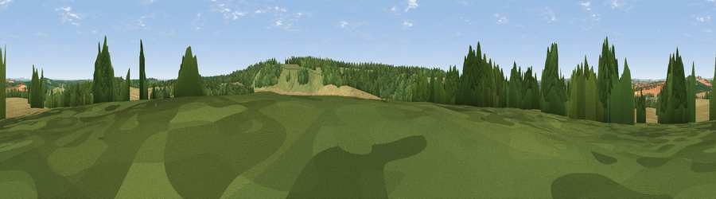

Ashley Down
#35800 in England · top 55% of its area beats it · near King's SomborneWhere it is
The exact computed spot (SU 39083 30229). Click the marker for map links.
The view, rendered

A 360° render of this exact spot computed from the terrain model, tree cover and land cover — summer colours, afternoon light, calibrated against photographs of famous viewpoints. Real trees, hedges and buildings will differ in detail.
The panorama
Grey silhouette: terrain skyline in each direction (720 bearings, Earth curvature and refraction included). Dashed green: skyline with trees (+15 m) and buildings (+8 m) as obstacles. Blue strip: how far the ground is visible on each bearing.
Where the view opens
Wedge length = distance to the farthest visible ground on that bearing (vegetation-aware). Rings at 10, 25 and 50 km.
What fills the view
44% cropland · 29% woodland · 26% grassland
Angular shares of the visible panorama (visual magnitude), not map area. Landscape diversity 0.47 (0–1 Shannon).
Key numbers
More beautiful places nearby
The staircase of upgrades: each row has a higher view potential than everything closer. Driving times are estimates from straight-line distance, calibrated against real road routing — check an actual route before setting out.
| Place | Direction | Drive | Score |
|---|---|---|---|
| Viewpoint near King's Somborne | SW · 1 km | ~3 min | 49.0 |
| Viewpoint near King's Somborne | SSE · 1 km | ~4 min | 61.3 |
| Viewpoint near Sparsholt | SE · 2 km | ~5 min | 66.9 |
| Beacon Hill | ESE · 23 km | ~37 min | 71.7 |
| Viewpoint near Meonstoke | ESE · 27 km | ~43 min | 74.8 |
| Beacon Hill | NNE · 28 km | ~44 min | 76.7 |
| Viewpoint near Buriton | ESE · 34 km | ~52 min | 80.0 |
| Beacon Hill | ESE · 43 km | ~63 min | 85.8 |
51.07006, -1.44357 · source: osm peak · position refined by local search. Computed location — check access rights before visiting.